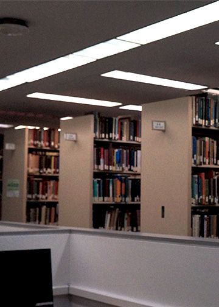

For the books image, I cropped it to be 5”x7”. I changed the brightness/contrast to make the colors of the books on the shelves easier to see. I also changed the exposure to make the bookshelves lighter in color. I finally edited the vibrance to make the overall image to look like there is more light instead of being in a dark room.
For the window image, I cropped it to be 1920 x 1080px. I edited the brightness/contrast to make the image look more clear and not as bright.
 Home
unedited
Home
unedited